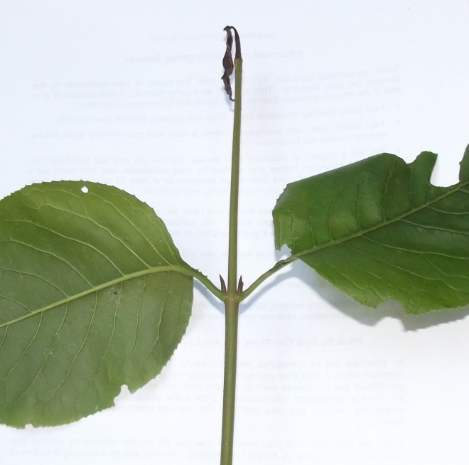
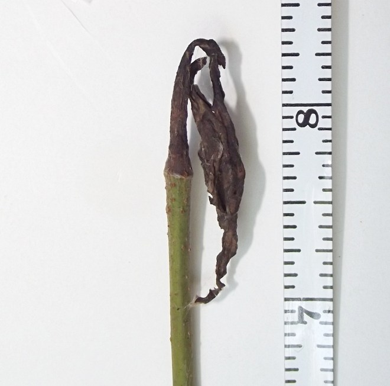
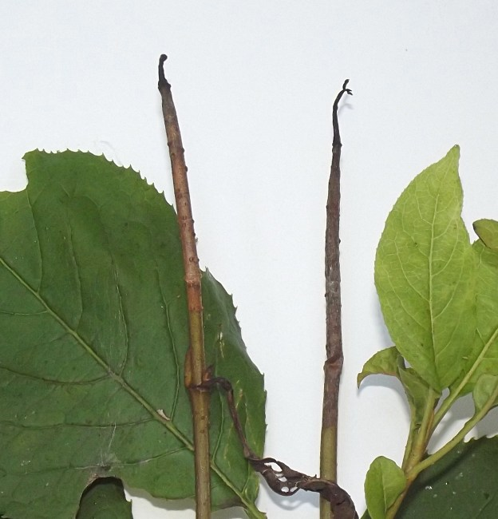
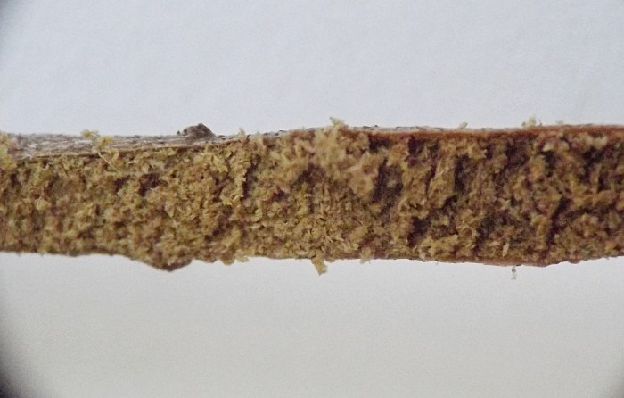
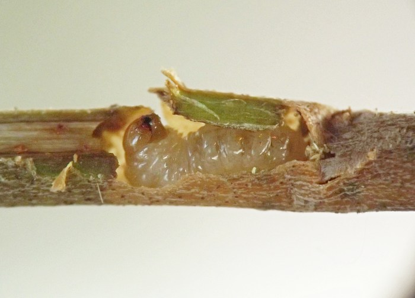
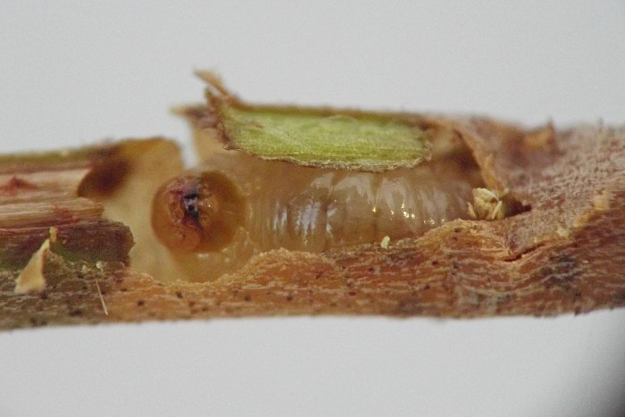
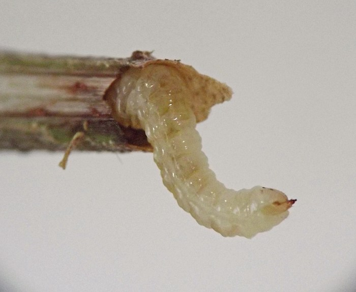
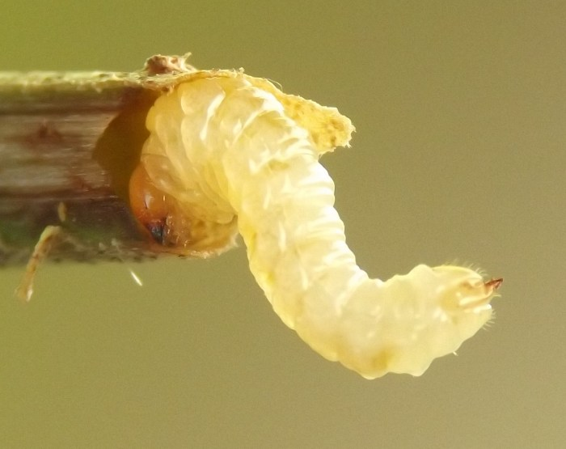
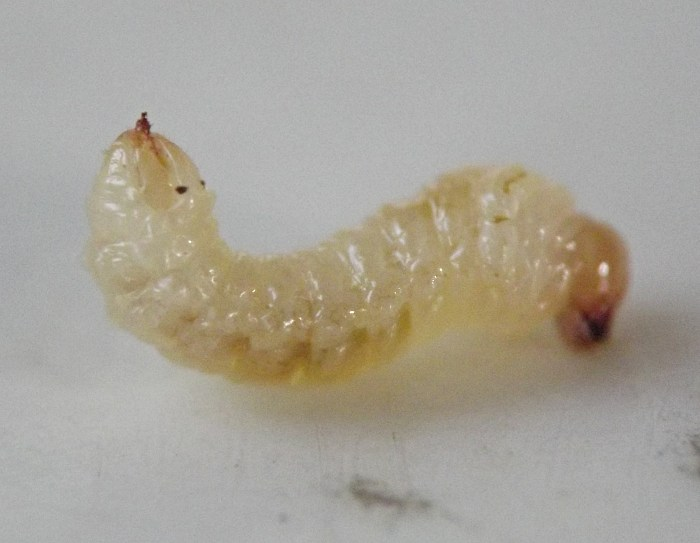

Stem borer (Hymenoptera: Cephidae) in Viburnum
| Record no.: | 0604 |
|---|---|
| Feeding guild: | Stem borer |
| Taxonomy: | Hymenoptera: Cephidae: cf. Janus bimaculatus |
| Stages observed: | trace, larva |
| Hosts in Viburnum: | V. lentago (nannyberry) |
An affected shoot of the hostplant may die back at the top as a result of the larva tunneling within. The tunneled area fills with frass. The larva possesses a distinctive prong (the "suranal process" in Yuasa (1922)) on the posterior end. I located larvae in 2017 and 2022. I tentatively identify this cephid as Janus bimaculatus based on the host association (see Smith and Solomon (1989)).

 Prev
Prev
{kind=link}
{kind=link}

{kind=link}

{kind=link}

{kind=link}

{kind=link}

{kind=link}

{kind=link}

{kind=link}

Coll. 08/07/17, photos same day (01-02); coll. 08/19/17, photos same day (03-09). All specimens above from Iowa, USA.
- Smith, D.R. and J.D. Solomon. 1989. A new Janus (Hymenoptera: Cephidae) from Quercus, and key to North American species. Ent. News 100(1):1-5, January & February, 1989.[return to in-text citation]
- Yuasa, H. 1922. A classification of the larvae of the Tenthredinoidea. Illinois Biol. Monogr. 7(4):1-172.[return to in-text citation]
Page created: March 10, 2026. Last update: none